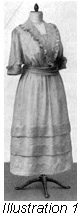
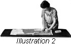
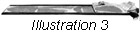
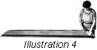

1926—The New-Way Course in Fashionable Clothes-Making
Lesson 48—Afternoon Gowns
The Etiquette of the Afternoon Gown
There are many social occasions when the afternoon gown is the only appropriate gown—when this type of gown represents the only correct costume. At the formal luncheon, for instance, one wears one's gayest and most becoming afternoon frock. On her day at home, the hostess is attractively attired in a dress of this type. At the lawn party on a summer afternoon, at the afternoon dance, at the afternoon wedding—in short, at all formal and informal afternoon functions one wears a becoming afternoon frock.
At the theatre, however, one's gown should be very simple and inconspicuous. For street wear, a suit is in better taste, or a simple cloth frock. The more elaborate afternoon frocks should be worn only on occasions of social importance.
There is the tea-hour, which is the fashionable hour of the day. The hostess usually wears a clinging gown of silk, and the guests wear attractive afternoon frocks of silk, velvet, cloth and novelty materials. There is a sufficient variety in appropriate materials and styles for a woman to find exactly what she wants to make her afternoon gown more than ordinarily individual and becoming.
With afternoon frocks, one may wear jewels but not heavy necklaces or glittering brooches. Only the simplest of jewels may be worn—a pin or a softly glowing string of pearls. If the affair is formal, the hair may be as elaborately marcelled as for the evening. In this case, the gown should be made of a rich material and in a style suitable to the occasion.
Elderly women wear black lace and satin at formal afternoon occasions Certain shades of brown and blue, and nearly all shades of gray are irreproachably good taste if they are becoming. Very young people should wear light colors in the afternoon, especially to the garden party and tea.
There are several color combinations that are very beautiful in lawn and garden settings. We will mention them here as they may be valuable to you in selecting materials and colors for such occasions. Violet and orange, both pale and not in the least vivid, offer a delicate harmony of color that is nothing short of exquisite. You will find old rose and Nile green equally effective. For the fair-complexioned person, orchid may be combined with vivid colors such as red, green and blue. Black satin, for the elderly person, takes on a festive note when it is combined with henna or old blue.
Dress at the afternoon dance should be light and airy. The styles may be simple, but the colors should be as gay and rich as the colors from Nature's own palette. One does not omit the hat with afternoon attire, and it should be of a type appropriate to the rest of the costume. The afternoon wrap may be dark or light, as preferred but it should not be elaborate.
For afternoon calls, there is nothing more attractive or in better taste than the tailored suit when worn with a dainty blouse of either the "tucked in" or "over blouse" type. This blouse may match the suit in color or it may be of a contrasting color.
The lines and color of both suit and blouse should be becoming to the wearer. Complete this costume with a small becoming hat, immaculate gloves and shoes.
In this lesson you are going to learn how to make an afternoon gown. It is a very simple gown made of plain materials. But it covers nicely all the fundamental principles of dress-construction as relating to the afternoon gown, and later when you want to make such gowns in better materials and with more striking notes of trimming and design, you will be able to do so without trouble.
Perhaps, even in this simple gown you are going to make, you will be able to incorporate certain style features that will give it new beauty and charm. Do not, however, alter the construction of the garment in any way as this lesson covers many features which every student is expected to master.
Making the Afternoon Dress (Illustrations 48— 1-2-3 and 4)
You will find that the construction details of the dress you are now going to make are very similar to the construction details in the making of the shirt-waist dress,. If you make this dress with the long collar and trim the collar and cuffs with fine plaitings or tiny ruffles, you will be delighted with the effect.
- First prepare the material. (Lesson 18.)
- Then prepare the pattern by pressing it free of all wrinkles, and identifying each piece. Write over each part what its name is, and this will avoid confusion later.
- The lining should be cut first, if a lining is desired. If the dress is of cotton material no lining is necessary.
- If you do make a lining, baste it together, matching the construction marks. Use French seams. Slip the lining on and fit, making any necessary alterations. This lining can be best fitted over the padded dress forms. (Lesson 20.)
- Remove and make whatever changes are necessary. Stitch the seams. Make a hem at the edges and center front and sew on hooks and eyes.
- Now face the necklines, using a sewed-on bias facing. Then face the armcye using an exceptional type of facing. (Lesson 8.)
- The fulness at the waistline should be arranged and attached to a belt as taught in Lesson 20.
- Make the dress entirely separate from the lining. When it is finished it is tacked to the lining at the shoulder seams, or if preferred, it may be worn separately.
- Pin the pattern of the dress to the material, paying strict attention to the up and down, as well as the right and wrong sides of the material. The pattern should be placed and the material cut in the most economical way. Pin the entire pattern on the material before cutting any part of it. If the entire pattern is pinned on the material, and the layout studied carefully, you will be able to save material and probably avoid mistakes. The low surplice with the long collar should be used, if the flowing or loose sleeve is desired.
-  The waist and sleeves are now cut, according to the pattern. Mark all construction points. Do not cut the skirt now, but be sure that enough material is left to make it.
- Remove the pattern and baste the waist together. Match the construction marks carefully. French seams should be used if the dress is being made of cotton material.
- Proceed to fit the waist either on the padded form or on to the person. This fitting should tell if the shoulder and underarm seams are correct. The sleeve is fitted at this time.
-  Remove and make any necessary alterations. Stitch the seams. The sleeve seams should be stitched at this time also.
- Now make the collar and cuffs. In making the long collar, handle the material very carefully for all edges are on the bias, and stretch easily. The collar will not be correct in shape if these bias edges stretch. Join the sections at the center back in a plain seam. You will find it convenient to lay each piece of the collar flat on a piece of paper and machine stitch along the edges which later will be attached to the neckline of the dress. This prevents the edges from stretching. Before applying a plaiting or ruffling to the collar, be sure that the seams at the center back in the upper and under sections are pressed open.
- If you decide to use plaiting, first determine the width it is to be when finished. Add to this the width of the hem and a quarter of an inch for the seam. Allow three times the length of the space to be trimmed for this plaiting and cut it on the crosswise grain of the material, the width determined, and join the pieces using narrow plain seams.
- Hem one edge of this material, using the narrow hemmer attachment on the sewing machine. If the material is very fine in texture it will pass through the attachment which hems and sews lace at the same time, you will find that you can finish the edges to make a dainty trimming. Test this with a scrap of material before trying to hem the plaiting. Lesson 6 tells how to use the hemmer attachment.
- Having hemmed this, send it to the dealer to have it knife or side plaited. If a ruffle is used instead of a plaiting, it is prepared in the same manner, but only one and one-half times the amount needed is allowed for fulness, and the ruffler is used to gather the top edge. (Lesson 7.)
- The upper section of the collar should be taken now and placed with the gathered edge of the ruffle even with the outside edge of the collar. The right sides should be together. Baste or pin this in place along the entire edge. Then take the other collar section and place the right side of this to the right side of the first collar section, the edges even. This brings the right side of the sections together, with the ruffle between them.
- Baste along the edges with small even basting stitches, making a seam which holds the edges of the collar sections and the ruffle even.
- Machine stitch a seam along this edge wide enough to take in the stitching which holds the fulness of the ruffle. Be sure that this stitching is not allowed to show when the collar is turned to the right side.
- Turn the collar through to the right side and baste along the edge to hold firmly in place. The edges to be attached to the neckline of the waist should be basted together, and the seams at the center back should match perfectly.
- Now pin the collar in place on the neck of the dress. The under side of the collar should be to the right side of the dress and all construction and center marks matching. Prepare a bias facing one inch wide. Place the right side of it to the right side of the collar, the edges of the waist, the collar and the facing even. Baste in a seam, using fine even basting stitches.
- Proceed to hem and sew the hooks and eyes on an inside belt, and arrange the fulness at the bottom of the waist on this belt. It should open at the center of the front. The part of the waist that laps will not be put in a belt at this time.
- Now make the cuffs for the sleeves in exactly the same way that the collar has been made, and attach to the bottom of the sleeve using a French seam. When finished, this seam should be on the right side of the sleeve between the cuff and the sleeve when the cuff is in correct position.
- Baste the sleeves in the armcyes of the waist, matching all construction marks.
- You are now ready to make the skirt. It is a straight tucked skirt and you should be able to make it without trouble if you have mastered Lesson 40. Following are the correct steps of construction in the making of the skirt.
Making the Skirt
- Cut the skirt.
- Join the lengths, using a plain seam.
- The placket should be finished, and marked for snap fasteners, using the placket marker on the dressmaking chart to insure absolute evenness.
- If the tucks were marked when the skirt was cut, baste in according to these marks. If they were not marked, follow the directions outlined in Lesson 40 for locating and making them. Do not machine stitch the tucks until after the skirt has been fitted.
- Now run two shirrings in the top of the skirt, the first line one quarter of an inch from the edge, and the second a half inch below this.
- Take a straight cross or lengthwise strip of material, one-and-one-quarter inches wide and one and one-half the waist measure. Make a quarter-inch underturning on each edge, and press in place.
- The opening of the skirt is on the left hip, measure and mark the waist measure on this little belt just made, and arrange the fulness of the skirt on it. The extra length of the belt extending beyond the skirt from the side back at the placket will be used to finish the left front of the section of the waist which extends beneath the right side.
- The waist and skirt should now be pinned together. The center lines of the skirt and waist must match perfectly. The skirt attached to the narrow belt is placed on the right side of the waist belt, making a neat finish for the bottom of the waist. Take pains with the pinning together of the skirt and waist, as this is one of the most important steps in the construction of the dress. A beautiful skirt and a beautiful waist will not recompense you for the ill-fit that will result if the parts are not correctly attached.
- Slip the dress on, preferably on the form, and arrange the part of the waist that is to lap and form the surplice effect. The under part will be adjusted to the little belt which is attached to the top of the skirt. The upper part should be attached to this belt from the center front so that it is on the belt with the skirt.
- Observe the dress carefully and note if the fulness of the skirt hangs properly. Note also the length, and if it is not correct adjust it. Note if the tucks are graceful and correctly proportioned, if the closing at the neck is just right—if the dress is correct in every detail.
- Stitch the collar in place, after making any changes that are necessary in the dress and removing it from the form or person. In stitching the collar, the bias facing should be stitched on also. Then stitch the sleeves in the armcye, also stitching a bias binding in at the same time.
- The waist and skirt are now stitched together at the belt. To accomplish this, stitch at both top and bottom edge of the narrow belt made of the material, making the line of stitching from end to end of the belt.
- Remove all bastings and hem down the binding at the armcye.
- Now make an underturning on the loose edge of the facing at the neck line, and hem it carefully in place. This is a sewed on facing (Lesson 8). The turn at the collar must lie perfectly flat, to give a well-finished effect.
- All raw edges at the waist line should now be finished. The extensions at the waist line should be faced to make a neat finish, and hooks and eyes sewed in place, to hold the waist in position.
- Hem the girdle or belt and pin in place. The dress should be on the form while this is being done. Sew hooks and eyes on the belt ends.
This completes the dress. You may make tight sleeves if you wish, by referring to Lesson 43. Throughout the making of this dress remember the value of good workmanship, the triumph of fine handiwork—and do not sacrifice quality to speed. Rather let the making of the dress take you a little longer, than finish it in a hurry and make some of the steps of construction poorly or incorrectly.
Lesson 46—48
Questions
- When is hand embroidery appropriate?
- On what type of garment is beading inappropriate?
- What is lace?
- What type of ribbon is used for loose loops and bows?
- What sewing machine attachments help in making attractive trimmings?
- What materials are appropriate for the debutante's evening dresses?
- What are the two distinct groups of evening gowns?
- When is the hat omitted from the costume?
- Upon what occasions are afternoon gowns worn?
- How do you put a ruffle between the edges of a double collar?
Samples of the following should be sent in for inspection in the envelope provided for the purpose. If samples are not correctly done, corrected work will be returned with full explanation. In the case of COMPLETED GARMENTS, the work will be returned to the student for use. Mail your samples with your answers to Quiz Questions and be sure to put name and address and student number on the outside of the envelope. Don't make your samples larger than 5 inches long and 3 inches wide.
Homework Problems
- Sketch, or cut a picture from a magazine or catalog, an evening dress expressing calm and dignity. Tell the material you would use for it.
- Sketch, or cut out a picture, of an evening dress expressing gayety and happiness. What material would you use in making it?